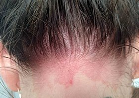
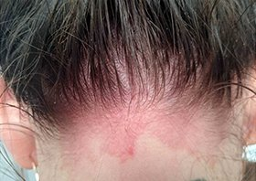

Как успях да победя псориазиса
Здравейте, всички! Казвам се Катерина и съм на 26 години. Ако и вие сте тук, значи ви притеснява псориазиса. Само преди 3 години, дори самата дума “псориазис” ми беше непозната... Но само за 1 седмица, животът ми се превърна в кошмар. Познато, нали? Прочетете този текст до края и може да познаете себе си. Но основното, което ще разберете е как да победите псориазиса!

Страшната диагноза: животът преди и след псориазиса
Много добре помня онзи ден, когато доктора ме погледна в очите и произнесе страшната диагноза: псориазис. А аз просто си мислех, че това е някаква алергия. Пулса ми се ускори, а времето сякаш спря. Отначало мислех, че ще умра! Специалистите се опитваха да ме успокоят, но всичко беше напразно. И едва след няколко дни осъзнах, че все още не умирам и всъщност трябва да действам, тъй като сърбежа се увеличаваше. От този момент започна дългия ми път в търсене на най-ефективното средство от псориазис.
Когато след три дни отидох отново при лекаря, разбрах за всички възможни медицински методи за справяне с псориазиса. Няма да ги изброявам, тъй като, най-вероятно знаете всичко за тях. Аз разбрах само, че всички те, могат да премахнат само симптомите на заболяването и да забавят развитието му, НО всъщност не премахват причините за него. Специалистите нищо не можеха да направят. Само казваха: “Ще Ви се наложи да се научите да живеете с псориазиса”. Не знам защо, но когато чух това, нямаше как да се съглася с тях. Твърдо бях решена да изпробвам всички съществуващи начини за борба с псориазиса:да вложа всичките си сили, цялото си време и пари, но все пак да се отърва от псориазиса веднъж и завинаги. Реших, че в никакъв случай, псориазиса няма да е смъртна присъда за личния ми живот. Все пак, аз бях само на 23 години, когато ми поставиха тази диагноза!

Псориазиса не е присъда
Времето минаваше, а чудодейното средство, така и не се намираше. Ставаше ми все по-зле с всеки изминал ден - псориазиса прогресираше. Лекарите не ми вдъхваха доверие и ме изпращаха постоянно на скъпоструващи процедури. Кожата ме сърбеше, белеше се и получавах дразнене от най-малкия допир. Затворих се в себе си. Аптеката до нас вече започна да ме възприема като постоянен спонсор. Участъците по кожата, които бяха поразени от псориазиса се разрастваха и ми беше все по-трудно да подбирам дрехи, които да нося. Имах чувството, че скоро най-подходящото облекло за мен ще е бурката.
Не исках да излизам от вкъщи. Предполагам, че не е необходимо да ви напомням колко са ужасни проявите на псориазиса. Навсякъде, където и да отидех, постоянно имах желанието да се почеша. Най-гадното беше да гледам осъдителните реакции на хората - дори близките ми приятели не успяваха да скрият отвращението си от кожата, която се лющеше и белеше от мен, и оставаше по седалките в колата, диваните, по пода.
В това време проблема ми със здравето започна да се забелязва и от другите хора. В следствие на диагнозата “псориазис” личният ми живот се превърна в най-лошия кошмар за всяко момиче - изпратиха ме в принудителна отпуска на работа, тъй като се страхуваха да не се ”разпространи инфекцията в колектива”-хората не приемат псориазиса. После гаджето ми ме напусна, защото не можех повече да го докосвам спокойно. Моето семейство трябваше да се сблъска с всекидневното раздрезнение, което излъчвах заради осъзнаването на собствената си слабост и безпомощност. Всички пари, които изкарвах и спестявах отиваха за борбата със симптомите на псориазиса. Повече не усещах радост - остана само ежедневната болка с малки проблясъци на надежда и те много бързо угасваха...
Дори веднъж в главата ми се промъкна онази страшна мисъл, която е позната на всички страдащи от неразбиране тинейджри... Колко съм благодарна на случайността, която ме заведе на сайта, в който продаваха ! Тази случайност буквално спаси живота ми, който съвсем скоро започна да придобива смисъл.
Животът без псориазис съществува!
Беше ли прав онзи доктор, който ми каза да се науча да живея с псориазиса? Сега мога да кажа със сигурност - НЕ! Вие не трябва да се учите а живеете с псориазиса. Вие трябва да разберете как да победите псориазиса веднъж и завинаги. Моля, не следвайте обичайните си скептични мисли сега. Псориазиса може и трябва да бъде победен и това е по силите Ви!
Преди да Ви открия тайната ми за ефективна борба с псориазиса, искам да Ви помоля да отхвърлите всички негативни мисли. Това средство против псориазис ми помогна буквално да започна живота си отначало и аз искренно искам и Вие да намерите надеждата, както я открих аз тогава. Готови ли сте за нов живот без псориазис? Кажете си ДА и се запознайте с най-дъгоочаквания в света продукт !
Кое средство от псориазис наистина помага?
Веднага ще се постарая да отговоря на всички Ваши въпроси. Не, крема не е панацея и поредното плацебо. Това е натурално, нехормонално средство, което наистина помага в борбата с псориазиса! Казвам го на база опита си като пациент в многобройните клиники и като страдаща от остра форма на псориазис. Ако все още ми нямате доверие (нормално е и аз бях абсолютно скептична по повод избора на средства от псориазис) предлагам да се доверите на фактите.
Защо помага в борбата с псориазиса? Защото този продукт има уникална формула, която съдържа само оригинални и силнодействащи компоненти: натурални масла, каприлов триглицерид, а също и обеззаразяващи антисептици.
След като прочетох състава, разбрах, че в продукта няма хормони, които присъстват във всички препарати против псориазис, но при това има каприлов триглицерид, който се препоръчва при това заболяване. Има само натурални компоненти, които не придизвикват странични ефекти, усложнения, алергии и други неприятности, забелязахте ли? Аз обърнах внимание на това веднага. Тогава отидох на официалния сайт и поръчах без много да му мисля, така или иначе нямаше какво да губя. Това беше само преди 4 месеца.
Вие можете да победите псориазиса
Както вече се досещате, останах много доволна от ефекта на . Не просто доволна, а направо шокирана!
Още от първите дни на употреба на крем по схемата в инструкцията, наблюдавах следните изменения:
- Сърбежа започна прогресивно да изчезва;
- Зачервяванията по кожата изчезнаха;
- Кожата престана да се лющи и бели;
- Петната от псориазис престанаха да растат;
- Аз започнах да се чувствам много по-добре като цяло.
Сънят ми от много дълго време насам пак стана спокоен, появи ми се апетит и желание да живея! Постепенно се върна увереността ми в себе си, премина страха да излизам от вкъщи. Спрях да се чеша! Толкова здрава и толкова добре не съм се чувствала от 3 години насам. Можете да си представите, колко съм щастлива сега, когато буквално нищо не ме базпокои? Аз победих псориазиса!
 

Като минус на препарата, мога да кажа само, че е измислен твърде късно за тези хора които са били принудени да живеят с псориазиса 5, 10, 15 години или още по-зле - цял живот...Дори не мога да си представя как бих се мъчила, ако не бях си купила на време крема ! Сега това средство винаги стои в домашната ми аптечка, а аз най-накрая се чувствам като пълноценна личност и отново желана жена. Купувам го единствено от официалния сайт и на вас ви препоръчвам. Не ми се иска да се разочаровате от продукта, като си купите не оригинален, а фалшификат.
Защо написах отзивите си за ? За да може всеки от вас да се върне към пълноценния живот, все пак не сме избирали живот с псориазис, ние заслужаваме да живеем без него. Сега и вие знаете, как да победите псориазиса!
Престанете да съмнявате в смисъла на живота си - поръчайте си и се отървете от псориазса!


Коментари:
Калина
всички са толкова въодушевени... Искрено ми е жал за автора, 3 години са си направо цяла вечност! Аз съм на 19, страдам от псориазис около година, но се сблъсках със всичко, включително и суицидни мисли. Благодаря ви за подарената надежда
45 2 ОтговориПетър
Ана, подкрепям. Днес всички продукти в интернет предизвикват съмнение, но желанието да се избавиш от псориазиса надделява. Ще рискувам!
8 0 ОтговориP.S. Катерина, браво на Вас, че не сте се предали. Здраве и късмет във всичко!
Ана
Все пак още имам съмнения относно препарата, но знае ли човек
12 1 ОтговориМакс
Прочетох Вашата история и Ви съчувствам. Всичко, което сте описали ми е познато. Не разбрах само защо толкова късно сте открили ? Аз си го взех още преди 7 месеца и оттогава живея като нормален човек и Ви пожелавам същото :)
0 0 ОтговориЕлена Петрова
Аз разбира се съмнявам, че чак пък толкова Ви е помогнал този крем... Страдам от псориазис вече повече от 10 години
2 0 ОтговориСъбина
мен също ме впечатли вашата история. Наистина, все едно е писана за мен, даже сме на една и съща възраст! Преди не съм чувала за псоридекс, но реших да си поръчам, може и аз да имам късмет!
15 0 ОтговориМарияна
Катя, Браво на вас! Много благодаря за личната история и отзивите, много ме впечатлихте. Вече си поръчах , от утре започвам нов живот.
1 0 Отговори